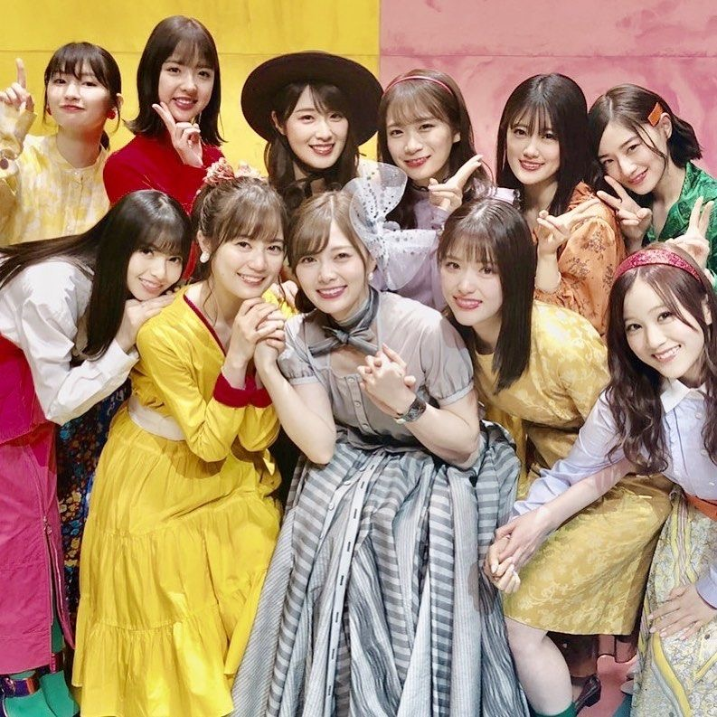
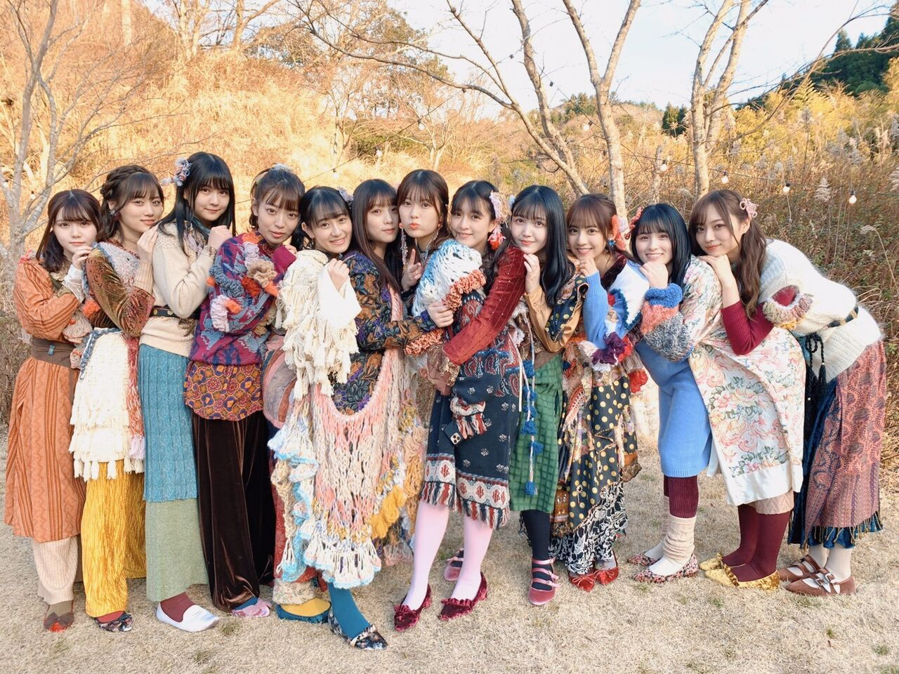
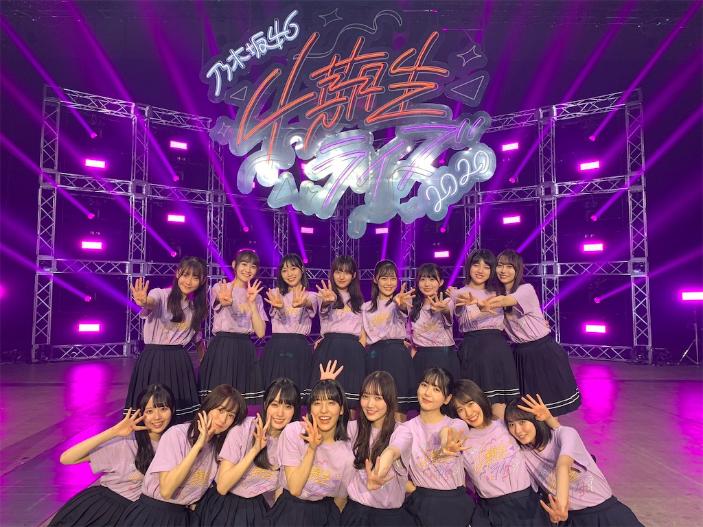
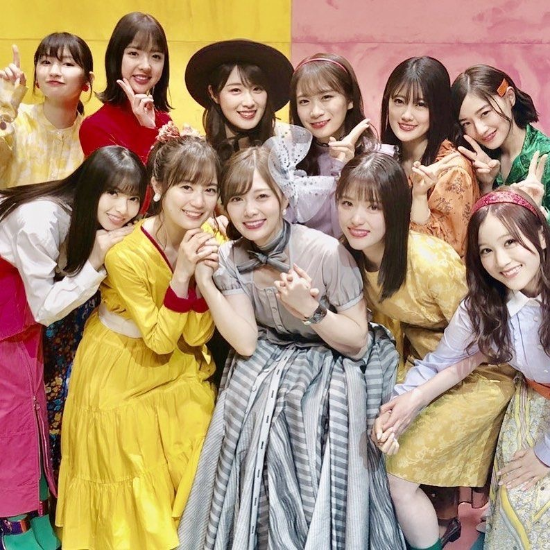

Comment
本サイトの「世界中の隣人よ」は、医療従事者に向けて作詞された楽曲であります。
新型ウィルスによって、一変してしまった世界、、、
その中でも、一人一人が"今"できる事を行い、前に進もうとする"強い心"がこの歌詞からは伝わります。
私達にできることは、何なのかを考えさせらる瞬間でもありました。
こうすればよかったという後悔が無いように、生きなけれ行けない現実を付きつられました。
人間は何か失ったことで、気づくことが多い。マイナスな事と捉えるのではなく、気づくことができたチャンスでもあります。
このチャンスをいかに「次に活かすか」が大事であると考えます。
私たち自身の願望にもっと欲求的になり、叶えるためにすべき行動に全力で挑むべきであります。
人生という、坂道を登り続ける為に、"努力・感謝・笑顔"を忘れずにしていきたいです。
O.Mikiya
-
Menbers Introduction
-

1期生
秋元真夏 生田絵梨花 齋藤飛鳥 高山一実 樋口日奈
星野みなみ 松村沙友理 和田まあや (五十音順) -
2期生
伊藤純奈 北野日奈子 新内眞衣 鈴木絢音 寺田蘭世
堀未央奈 山崎玲奈 渡辺みり愛 (五十音順) -

3期生
伊藤理々杏 岩本蓮加 梅澤美波 大園桃子 久保史緒里
阪口珠美 佐藤楓 中村麗乃 向井葉月 山下美月
吉田綾乃クリスティー 与田祐希 (五十音順) -

4期生
遠藤さくら 賀喜遥香 掛橋沙耶香 金川沙耶 北川悠里
黒見明香 佐藤璃果 柴田柚奈清宮レイ 田村真祐
筒井あやめ 早川聖来 林瑠奈 松尾美佑 矢久保美緒 弓木奈於
(五十音順)
-

-
Lyrics
作詞：秋元康作曲：taka
-
夜はいつだって明けると誰もみんな思っているよ
星がやがて消えて行くまで 僕らは窓の空を見てたなんてちっぽけな存在なんだ
この部屋から祈ることしかできなくて
世界のこの悲しみに胸を痛め
言葉以上の涙を流してた隣人よ そこにいて あなたの想いは伝わっているから
手を握らなくても その愛は分かち合えるよ
大切な誰かと今を生きよう -
自分に何ができるのだろう そう何度も考えてみた
ずっと眠れぬまま働く彼らにどう感謝をしようかそうさ 人間は捨てたもんじゃない
会ったことない誰かのため支え合って
すべてを乗り越えられる強さを持ち
未来に続く希望を信じてる隣人よ 微笑んで 私と一緒に歌ってください
壁の向こう側に この声は聴こえていますか？
お互いに一人じゃないとわかって…隣人よ 夜(よ)が明けて 世界を照らすまで部屋にいましょう
隣人よ そこにいて あなたの想いは伝わっているから
手を握らなくても その愛は分かち合えるよ
大切な誰かと今を生きよう
LALALA…
LALALA…《提供:プチリリ歌詞》
-
-
Message
一人には慣れていたはずなのに、
いざ一人になると寂しさについて改めて知った機会となりました。
自分たちに出来ることを１つ１つ行うことで繋がることが出来ると思います。
そして、また会える日を楽しみしています！！
By 齋藤飛鳥-Asuka Saitou-